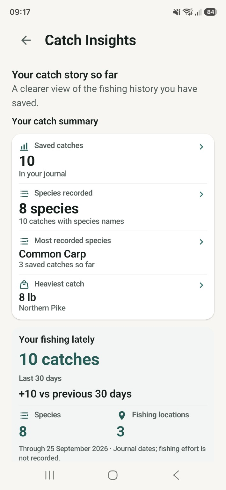

Keep the catch
A journal you
can come back to.
Keep catch photographs and fishing details together. Identification is optional; every entry can start with what you already know.

Fish identification · Catch journal · Insights
Get a likely fish species suggestion from a photo, save your catch details and build a personal fishing history that becomes more useful with every entry.
Free to download on Android.
No account needed to start.
Identification is a suggestion, never a guarantee. You can also record a catch without identification or a photo.

Identify · Journal · Insights
Save the details. Build your journal. See your own fishing history take shape.
Keep the catch
Keep catch photographs and fishing details together. Identification is optional; every entry can start with what you already know.
See your history
Explore Personal Records, Fishing Locations and other existing Catch Insights as your recorded history grows.

A useful companion on the bank
Free to download on Android.
DESIGN CONCEPT — NOT LIVE · B: The action-and-utility experience
Consent controls simulate appearance only. Nothing is stored or sent. Play links retain the existing destination and attribution.